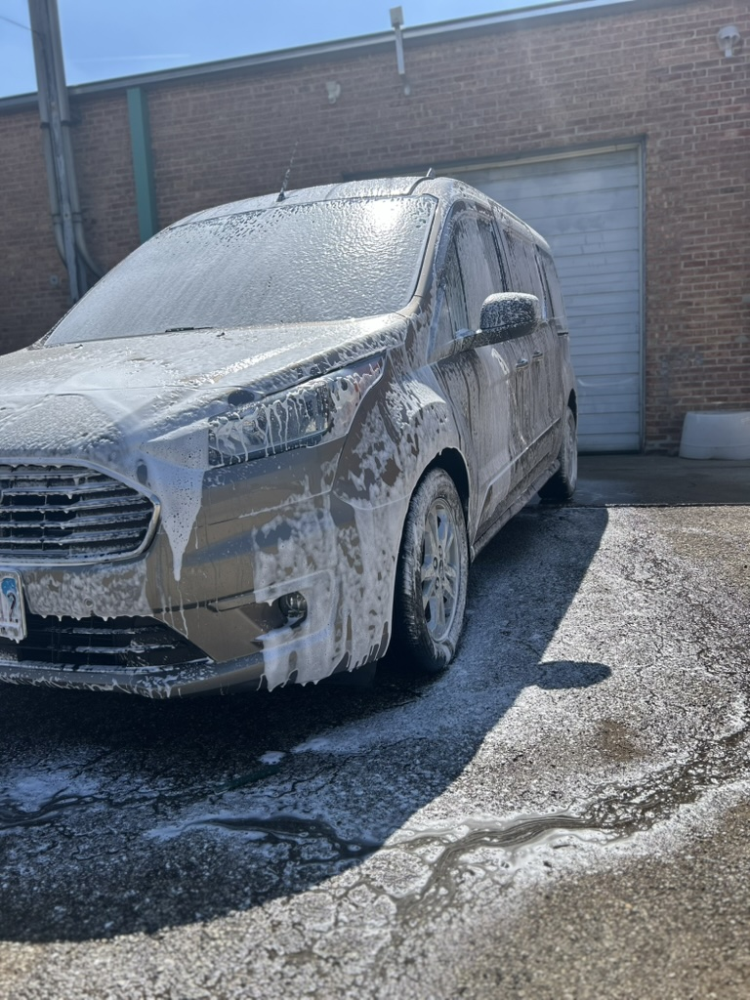
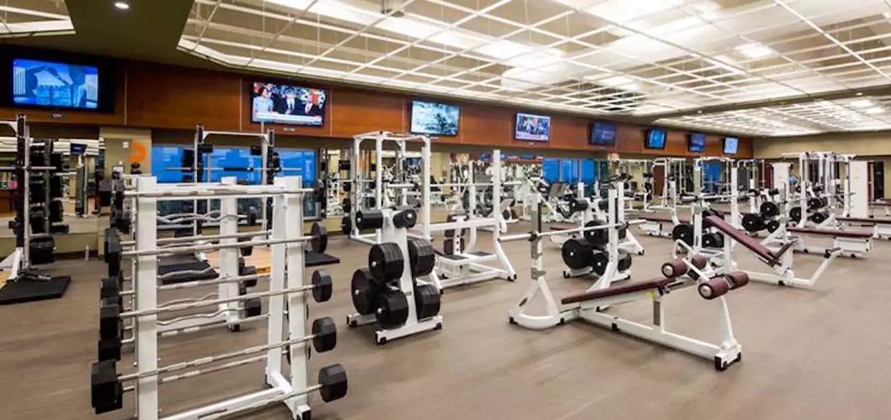

My name is Oskar Ura, and I'm a college student currently studying at McHenry County College. I have a passion for technology, cars, and continuous self-improvement. When I'm not working or studying, I enjoy learning new skills and exploring creative business ideas.
I'm taking this class because I want to strengthen my technical and web development skills. I believe that understanding how to build and structure websites will help me in both my studies and my business. Learning this will also allow me to express creativity and professionalism online.
One of my main hobbies is car detailing. I love transforming a vehicle's appearance by cleaning, polishing, and protecting it until it looks brand new. This hobby has also grown into a small business, allowing me to turn passion into profit. I find the process satisfying because it is hands-on, visual, and always leaves a clear result.
I go to the gym regularly to improve my strength, endurance, and overall health. Fitness helps me stay disciplined, reduces stress, and builds the mental focus I need to succeed in school and business. Staying active gives me structure and keeps my mind sharp.
I spend a lot of time learning about technology from computers and networks to web development and automation. Coding is something I enjoy because it combines logic, creativity, and problem-solving. I like building small projects that improve efficiency or look great online.
Visit my college website: McHenry County College